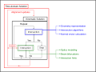

Core design
The BMO package is intended to provide optical simulation capabilites with as much "out-of-the-box" comfort as possible, meaning that users should not have to worry about e.g. providing the correct optical sequence and exact alignment of objects. The following five design principles are core assumptions of the underlying API:
- Optical interactions are decoupled from the underlying geometry representation
- Optical elements are closed volumes or must mimic as such (exceptions apply, e.g. coatings)
- Elements should be easily moveable and have working interactions for most angles of incidence
- Without additional knowledge, tracing is performed non-sequentially
- With additional knowledge, tracing is performed sequentially
Intersect-Interact-Repeat-Loop
The first two principles will be elaborated upon in more detail in the Geometry representation section. For the latter two design decisions, the following high-level solver schematic can be used to abstract the steps that are performed when calling solve_system! with an input system and beam:

This scheme is loosely referred to as the Intersect-Interact-Repeat-Loop and consists of the following steps:
- Calculate the closest Intersection between a ray/beam and the objects within the system
- Calculate the optical Interaction that occurs at the surface or within the volume of the element
- Attach or overwrite the next part of the ray chain or beam tree
- Use the new information to repeat 1.
Once this procedure has been completed, the alignment of the system or other time-dependent optical properties (e.g. the phase of a Gaussian beamlet) can be updated. When rerunning the solver, the algorithm will try to reuse information about the previously intersected objects to speed up the calculation of the next simulation step. This is described in more detail in the sections: Tracing systems and Retracing systems.
The next sections will focus on the Intersection and Interaction steps.
Intersections
Calculating intersections between straight lines, i.e. rays, and surfaces is a central challenge for every geometrical optics simulator. This must be done with high numerical precision, since many optical effects are sensitive on the order of the wavelength of the light under consideration with respect to position and direction [14, p. 265 ff]. In order to define this mathematically or algorithmically, many different methods exist [15]. The first question is, how is the geometry of the problem defined. This topic is treated in the Geometry representation section. The second question concerns then the algorithm or equation that allows to calculate the point of intersection between a ray and the surface of the element. This function is called intersect3d and is, at its core, defined for each shape and ray:
BeamletOptics.intersect3d — Method
intersect3d(shape::AbstractShape, ::AbstractRay)Defines the intersection between an AbstractShape and an AbstractRay, must return an Intersection or nothing. The default behavior for concrete shapes and rays is to indicate no intersection, that is nothing, which will inform the tracing algorithm to stop. Refer to the Intersection documentation for more information on the return type value.
Regardless of the underlying concrete implementation, each call of intersect3d must return nothing or the following type:
BeamletOptics.Intersection — Type
Intersection{T}Stores data calculated by the intersect3d method. This information can be reused, i.e. for retracing.
Fields:
object: aNullablereference to theAbstractObjectthat has been hit (optional but recommended)shape: aNullablereference to theAbstractShapeof theobjectthat has been hit (optional but recommended)t: length of the ray parametrization in [m]n: normal vector at the point of intersection
Since an optical element can consist of multiple joint shapes, the return type must store which specific part of the object was hit.
Interactions
Optical interactions are performed after the point of intersection has been determined. The interact3d interface allows users to implement algorithms that calculate or try to mimic optical effects. The fidelity of the algorithm is effectively only limited by the amount of information that can be passed into the interact3d interface. The method is defined as follows:
BeamletOptics.interact3d — Method
interact3d(::AbstractSystem, object::AbstractObject, ::AbstractBeam, ::AbstractRay)Defines the optical interaction between an incoming/outgoing beam/ray of light and an optical element, must return an AbstractInteraction or nothing. The default behavior is that no interaction occurs, i.e. return of nothing, which should stop the system tracing procedure. Refer to the AbstractInteraction typedocs for more information on the return type value.
As with the intersect3d method, a predefined return type must be provided in order to make the solve_system! interface work. The AbstractInteraction is used in order to create "building blocks" from which the output beam is constructed.
BeamletOptics.AbstractInteraction — Type
AbstractInteractionDescribes how an AbstractBeam and an AbstractObject interact with each other. This data type stores information from the interact3d function and provides it to the solver. The solver can use this data to extend the AbstractBeam.
Implementation reqs.
Subtypes of AbstractInteraction must implement the following:
Fields
hint: a nullableHintfor the solver (optional but recommended)
Beam data
It is required that concrete implementations of this type provide some form of data on how to extend the beam. For instance, refer to theBeamInteraction and GaussianBeamletInteraction.
The interact3d return type limits the interface to only accepting one new beam segment per interaction at the moment. The developer needs to take into account that after e.g. a lens surface air-to-glass interaction, the solver "forgets" that the next logical step is to immediatly test against the lens again, since the most likely step will be the refraction at the glass-to-air surface. In order to alleviate this issue, the Hint type can be used.
Hints
As mentioned in the previous section, the BeamletOptics.Hint interface allows developers to manipulate the non-sequential solver algorithm into testing against a specific component and shape during the next cycle of the Intersect-Interact-Repeat-Loop. This interface has very high priority during intersection testing.
BeamletOptics.Hint — Type
HintA Hint can be passed as part of an AbstractInteraction and will inform the tracing algorithm about which AbstractObject in the AbstractSystem will be hit next.
The Hint does not need to result in a guaranteed Intersection. However, if the hinted shape is intersected, it will be immediatly assumed as the correct global intersection.
Fields
object: the object that might or will be intersected nextshape: the underlying shape that will be intersected next, i.e.shape(object), relevant for multi-shape objects
The main reason for this is the intersection ambiguity encountered at interfaces between air-tight component interfaces, e.g. Plate beamsplitters or cemented Doublet lenses. This is caused by the fact that for a ray with a starting point at this interface, technically both shapes are being "touched" at the same time. Additional program logic considering the ray direction of propagation can not always resolve this ambiguity. Therefore the task of providing additional information to the solver via the Hint interface is placed as a burden on the developer.
Tracing logic
Tracing systems
In the initial state, is is assumed that the problem consists of objects <: AbstractObject (in a system) and a beam <: AbstractBeam with a defined starting position and direction. No additional information is provided, and the specific path of the beam is not known beforehand. Consequently, brute force tracing of the optical system is required, involving testing against each individual element to determine the trajectory of the beam.
BeamletOptics.trace_system! — Function
trace_system!(system::AbstractSystem, beam::Beam{T}; r_max::Int = 20) where {T <: Real}Trace a Beam through an optical system. Maximum number of tracing steps can be capped by r_max.
Tracing logic
The intersection of the last ray of the beam with any objects contained within the system is tested. If an object is hit, the optical interaction is calculated. If no interaction occurs or no further objects are hit, the tracing procedure is stopped.
Arguments
trace_system!(system::System, gauss::GaussianBeamlet{T}; r_max::Int = 20) where {T <: Real}Trace a GaussianBeamlet through an optical system. Maximum number of tracing steps can be capped by r_max.
Tracing logic
The chief, waist and divergence beams are traced step-by-step through the system. For each intersection after a tracing_step!, the intersections are compared. If all rays hit the same target, the optical interaction is analyzed, else the tracing stops.
Arguments
system: The optical system through which theGaussianBeamletis traced.gauss: TheGaussianBeamletobject to be traced.r_max: Maximum number of tracing iterations. Default is 20.
This non-sequential mode is comparatively safe in determining the "true" beam path, but will scale suboptimally in time-complexity with the amount of optical elements. After solving the system, the beam path is known and can be potentially reused in the future.
Unlike with classic, surface-based ray tracers, the order in which objects are listed in the System object vector/tuple is not considered for the purpose of tracing or retracing.
Retracing systems
Once a system has been traced for the first time, the system and beam can be solved again. However, this time the solver will try to reuse as much information from the previous run as possible by testing if the previous beam trajectory is still valid in a sequential tracing mode. Retracing systems assumes that the kinematic changes (e.g. optomechanical aligment) between the current tracing procedure and the previous one are small. If an intersection along the beam trajectory becomes invalid, the solver will perform a non-sequential trace for all invalidated parts of the beam.
BeamletOptics.retrace_system! — Function
retrace_system!(system, beam)This function tries to reuse data from a previously solved beam in order to solve the system againg using a sequential approach.
Retracing
The retracing logic for an already solved beam loops over the rays and children and is as follows:
Begin
- Test if current
rayhas a validintersection- If not, mark beam tail for cleanup and go to
End
- If not, mark beam tail for cleanup and go to
- Recalculate the
intersection- If a hint was provided by a previous interaction, use hinted object
- Else, test against previous
intersection
- Test if the
raystill has a validintersectionafter recalculation- If no object is hit, mark beam tail for cleanup and go to
End
- If no object is hit, mark beam tail for cleanup and go to
Interact
- Recalculate the optical
interaction- Catch hints provided for next
ray - If no
interactionoccurs, mark beam tail for conditional cleanup and go toEnd
- Catch hints provided for next
- Add the interaction to the current
beam- If another
rayfollows, modify the next starting position - Go toBegin - Else mark children for cleanup, push new ray to
beamtail - Go toEnd
- If another
End
- If cleanup is required, do conditionally
- remove all beam tail rays after current
ray - remove all beam children
- reset beam tail ray intersection to nothing
- remove all beam tail rays after current
The implemented standard retracing procedure can handle beam path invalidations under certain conditions. However, one case that will lead to a silent error is if an element in the system is moved such that it blocks the beam path between two other elements. The retracer will not be able to detect this, since the testing of the previous intersection will return a valid intersection.
If this kind of situation must be modeled, e.g. in the case of an optical chopper wheel, retracing should be disabled.
retrace_system!(system::System, gauss::GaussianBeamlet{T}) where {T <: Real}Retrace the beam stored in GaussianBeamlet through the optical system. Chief, waist and divergence ray intersections and interactions are recalculated. All rays must hit the same object, or the retracing step is aborted. If retracing is stopped before the end of the beam is reached, further rays are dropped.
CPU and GPU support
Parallizing the execution of a solve_system! call on the CPU is straight-forward for systems that do not feature objects which can be mutated during runtime, e.g. detectors like the Detector. For each beam or ray the solution is independent and the solver can run on multiple threads. Special consideration needs to be taken when implementing mutable elements as mentioned above, since multiple threads might be able to access the underlying memory, leading to race conditions. Specifically, this means ensuring e.g. atomic write and read access.
With respect to GPU acceleration, this is not the case. Currently, all available implementations of solve_system! are highly branching algorithms which can not be implemented in a parallized way easily. This will most likley require a specific new subtype of the BeamletOptics.AbstractSystem with determinable sequential properties. This is not a development goal as of the writing of this section.